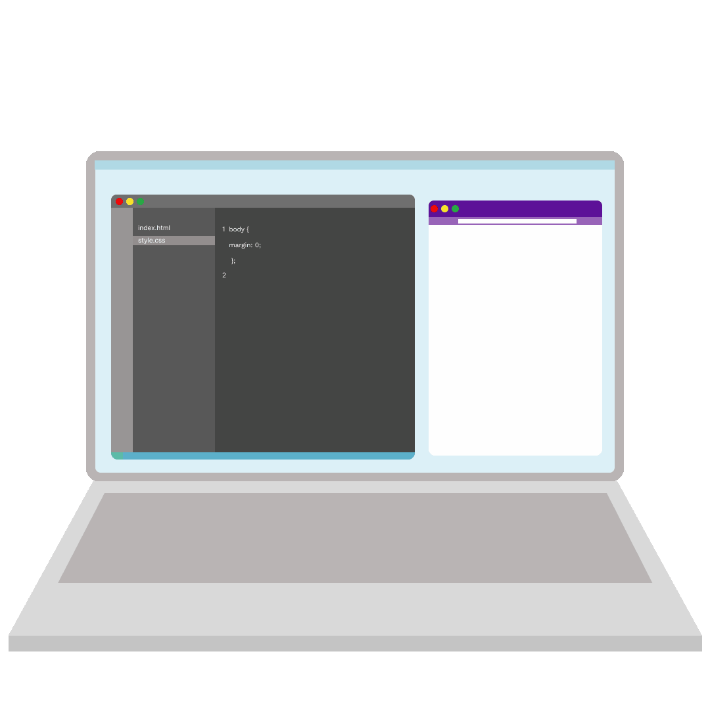

Front-end Web Design
Front-end web design is the practice of creating websites that are visually appealing and easy to use. Front-end web designers use HTML, CSS, and JavaScript to create websites that are functional and responsive.
Average Salary: $62,303